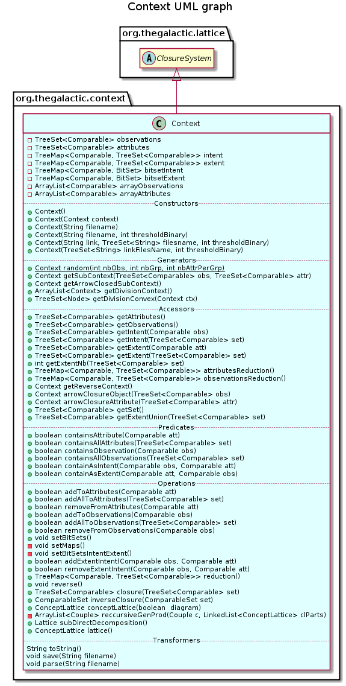

public class Context extends ClosureSystem
This class gives a standard representation for a context. A context is a binary table, with attributes in column, and observations in row.
A context is composed of
extent is a TreeMap that associates to each attribute a TreeSet of observations and intent is a TreeMap that associates to each observation a TreeSet of attributes.This class provides methods implementing classical operation on a context: closure, reduction, reverse, …
A context owns properties of a closure system, and thus extends the abstract class ClosureSystem and implements methods getSet() and closure(java.util.TreeSet<java.lang.Comparable>). Therefore, the closed set lattice of a context can be generated by invoking method ClosureSystem.closedSetLattice(boolean) of a closure system. However, this class also provides a method generating the concept lattice of this component by completing each closed set of the closed set lattice.
A context can be instancied from and save to a text file in the following format:
Observations: 1 2 3
Attributes: a b c d e
1: a c
2: a b
3: b d e
4: c e

| Constructor and Description |
|---|
Context()
Constructs a new empty context.
|
Context(Context context)
Constructs a new context as a copy of the specified context.
|
Context(String filename)
Constructs this component from the specified file.
|
| Modifier and Type | Method and Description |
|---|---|
boolean |
addAllToAttributes(TreeSet<Comparable> set)
Adds the set of specified element to the set of attributes of this component.
|
boolean |
addAllToObservations(TreeSet<Comparable> set)
Adds the set of specified element to the set of observations of this component.
|
boolean |
addExtentIntent(Comparable obs,
Comparable att)
Adds the second specified element as intent of the first one, and the first one as extent of the second one.
|
boolean |
addToAttributes(Comparable att)
Adds the specified element to the set of attributes of this component.
|
boolean |
addToObservations(Comparable obs)
Adds the specified element to the set of observations of this component.
|
Context |
arrowClosureAttribute(TreeSet<Comparable> attr)
Returns the arrow-closed subcontext of this component containing attr.
|
Context |
arrowClosureObject(TreeSet<Comparable> obs)
Returns the arrow-closed subcontext of this component containing obs.
|
TreeMap<Comparable,TreeSet<Comparable>> |
attributesReduction()
Removes from this component reducible attributes.
|
ConceptLattice |
closedSetIceberg(double support)
Returns the closed set iceberg of this component.
|
TreeSet<Comparable> |
closure(TreeSet<Comparable> set)
Builds the closure of a set X of attributes.
|
ConceptLattice |
conceptLattice(boolean diagram)
Returns the concept lattice of this component.
|
boolean |
containAsExtent(Comparable att,
Comparable obs)
Checks if the second specified element is an extent of the first specified element.
|
boolean |
containAsIntent(Comparable obs,
Comparable att)
Checks if the second specified element is an intent of the first specified element.
|
boolean |
containsAllAttributes(TreeSet<Comparable> set)
Checks if the specified set of attributes belongs to this component.
|
boolean |
containsAllObservations(TreeSet<Comparable> set)
Checks if the specified set of observations belong to this component.
|
boolean |
containsAttribute(Comparable att)
Checks if the specified attribute belong to this component.
|
boolean |
containsObservation(Comparable obs)
Checks if the specified observation belongs to this component.
|
Context |
getArrowClosedSubContext()
Returns the context defining the concept lattice of arrow-closed subcontexts of this component.
|
TreeSet<Comparable> |
getAttributes()
Returns the set of attributes of this component.
|
ArrayList<Context> |
getDivisionContext()
Returns a list of subcontexts such that the concept lattice of this component is obtained from a subcontext by doubling a convex.
|
TreeSet<Node> |
getDivisionConvex(Context ctx)
Returns a convex set of the concept lattice of c which can be doubled to recover the concept lattice of this component.
|
TreeSet<Comparable> |
getExtent(Comparable att)
Returns the set of observations that are intent of the specified attribute.
|
TreeSet<Comparable> |
getExtent(TreeSet<Comparable> set)
Returns the set of observations that are all intent of attributes of the specified set.
|
int |
getExtentNb(TreeSet<Comparable> set)
Return the number of observations that are all intent of attributes of the specified set.
|
TreeSet<Comparable> |
getExtentUnion(TreeSet<Comparable> set)
Returns the set of union of observations that are intent with one of attributes of the specified set.
|
TreeSet<Comparable> |
getIntent(Comparable obs)
Returns the set of attributes that are intent of the specified observation.
|
TreeSet<Comparable> |
getIntent(TreeSet<Comparable> set)
Returns the set of attributes that are all intent of observations of the specified set.
|
int |
getIntentNb(TreeSet<Comparable> set)
Return the number of attributes that are all intent of observations of the specified set.
|
TreeSet<Comparable> |
getObservations()
Returns the set of observations of this component.
|
Context |
getReverseContext()
Return a new reversed Context.
|
TreeSet<Comparable> |
getSet()
Returns the set of attributes as elements set used by the lattice generator abstract class to generate closed set lattice on attributes.
|
Context |
getSubContext(TreeSet<Comparable> obs,
TreeSet<Comparable> attr)
Returns subcontext with selected obs and attr.
|
Context |
init()
Initialise the context.
|
ComparableSet |
inverseClosure(ComparableSet set)
Builds the inverse of the closure operator of a set of observations.
|
ConceptLattice |
lattice()
Returns the lattice of this component.
|
TreeMap<Comparable,TreeSet<Comparable>> |
observationsReduction()
Removes from this component reducible observations.
|
Context |
parse(String filename)
Parse the description of this component from a file whose name is specified.
|
static Context |
random(int nbObs,
int nbGrp,
int nbAttrPerGrp)
Generates a partially random context.
|
TreeMap<Comparable,TreeSet<Comparable>> |
reduction()
Removes from this component reducible attributes and observations.
|
boolean |
removeExtentIntent(Comparable obs,
Comparable att)
Removes the second specified element from the intent of the first one, and the first one from the extent of the second one.
|
boolean |
removeFromAttributes(Comparable att)
Removes the specified element from the set of attributes of this component and from all the intents it belongs to.
|
boolean |
removeFromObservations(Comparable obs)
Removes the specified element from the set of observations of this component.
|
void |
reverse()
Reverses this component by replacing attributes by observations and observations by attributes.
|
void |
save(String filename)
Save the description of this component in a file whose name is specified.
|
void |
setBitSets()
Set the needed structures for the bitset optimization.
|
Lattice |
subDirectDecomposition()
Returns the concept lattice of this component represented as a subdirect product of its irreductibles components.
|
String |
toString()
Returns a String representation of this component.
|
allClosures, closedSetLattice, getReducibleElements, nextClosure, precedenceGraphpublic Context()
Constructs a new empty context.
public Context(Context context)
Constructs a new context as a copy of the specified context.
context - context to be copiedpublic Context(String filename) throws IOException
Constructs this component from the specified file.
The file have to respect a certain format:
The list of observations separated by a space on the first line ; the list of attrbutes separated by a space on the second line ; then, for each observations o, the list of its intent on a line, written like o a1 a2 …
Observations: 1 2 3
Attributes: a b c d e
1: a c
2: a b
3: b d e
4: c e
Each observation must be declared on the first line, otherwise, it is not added. Each attribute must be declared on the second line, otherwise, it is not added.
filename - the name of the fileIOException - When an IOException occurspublic static Context random(int nbObs, int nbGrp, int nbAttrPerGrp)
Generates a partially random context.
nbObs - number of observationsnbGrp - number of groups of attributes . Attributes are grouped such that each observation has one attribute per group.nbAttrPerGrp - number of attributes per group.public Context init()
Initialise the context.
public Context getSubContext(TreeSet<Comparable> obs, TreeSet<Comparable> attr)
Returns subcontext with selected obs and attr.
obs - : observations to be keepedattr - : attributes to be keepedpublic Context getArrowClosedSubContext()
Returns the context defining the concept lattice of arrow-closed subcontexts of this component.
Each observation of the returned context is a $1$-generated arrow-closed subcontext. The observation used to generate the context is used as a name for the subcontext. Attributes are the same of this component, and are used to defined the subcontext.
public ArrayList<Context> getDivisionContext()
Returns a list of subcontexts such that the concept lattice of this component is obtained from a subcontext by doubling a convex.
Each subcontext defines a concept lattice L. With the getDivisionConvex method, a convex C of this concept lattice is obtained. By doubling the convex set C of L, we get L[C], the concept lattice of this component.
public TreeSet<Node> getDivisionConvex(Context ctx)
Returns a convex set of the concept lattice of c which can be doubled to recover the concept lattice of this component.
This method must be used with contexts returned by the getDivisionContext. In other cases, it is meaningless.
ctx - context from which the convex set is computed.public TreeSet<Comparable> getAttributes()
Returns the set of attributes of this component.
public boolean containsAttribute(Comparable att)
Checks if the specified attribute belong to this component.
att - an attributepublic boolean containsAllAttributes(TreeSet<Comparable> set)
Checks if the specified set of attributes belongs to this component.
set - set of attributespublic boolean addToAttributes(Comparable att)
Adds the specified element to the set of attributes of this component.
att - an attributepublic boolean addAllToAttributes(TreeSet<Comparable> set)
Adds the set of specified element to the set of attributes of this component.
set - set of attributespublic boolean removeFromAttributes(Comparable att)
Removes the specified element from the set of attributes of this component and from all the intents it belongs to.
att - an attributepublic TreeSet<Comparable> getObservations()
Returns the set of observations of this component.
public boolean containsObservation(Comparable obs)
Checks if the specified observation belongs to this component.
obs - an observationpublic boolean containsAllObservations(TreeSet<Comparable> set)
Checks if the specified set of observations belong to this component.
set - set of observationspublic boolean addToObservations(Comparable obs)
Adds the specified element to the set of observations of this component.
obs - an observationpublic boolean addAllToObservations(TreeSet<Comparable> set)
Adds the set of specified element to the set of observations of this component.
set - set of observationspublic boolean removeFromObservations(Comparable obs)
Removes the specified element from the set of observations of this component. and from all the extents it belongs to
obs - an observationpublic void setBitSets()
Set the needed structures for the bitset optimization. WARNING: this must be called each time your dataset change
public TreeSet<Comparable> getIntent(Comparable obs)
Returns the set of attributes that are intent of the specified observation.
obs - an observationpublic TreeSet<Comparable> getIntent(TreeSet<Comparable> set)
Returns the set of attributes that are all intent of observations of the specified set.
set - set of observationspublic int getIntentNb(TreeSet<Comparable> set)
Return the number of attributes that are all intent of observations of the specified set.
set - set of observationspublic boolean containAsIntent(Comparable obs, Comparable att)
Checks if the second specified element is an intent of the first specified element.
obs - an observationatt - an attributepublic TreeSet<Comparable> getExtent(Comparable att)
Returns the set of observations that are intent of the specified attribute.
att - an attributepublic TreeSet<Comparable> getExtent(TreeSet<Comparable> set)
Returns the set of observations that are all intent of attributes of the specified set.
set - set of attributespublic int getExtentNb(TreeSet<Comparable> set)
Return the number of observations that are all intent of attributes of the specified set.
set - set of attributespublic boolean containAsExtent(Comparable att, Comparable obs)
Checks if the second specified element is an extent of the first specified element.
att - an attributeobs - an observationpublic boolean addExtentIntent(Comparable obs, Comparable att)
Adds the second specified element as intent of the first one, and the first one as extent of the second one. The first one has to belong to the observations set and the second one to the attribute set.
obs - an observationatt - an attributepublic boolean removeExtentIntent(Comparable obs, Comparable att)
Removes the second specified element from the intent of the first one, and the first one from the extent of the second one. The first one has to belong to the observations set and the second one to the attribute set.
obs - an observationatt - an attributepublic String toString()
Returns a String representation of this component. The following format is respected:
The list of observations separated by a space on the first line ; the list of attrbutes separated by a space on the second line ; then, for each observations o, the list of its intent on a line, written like o a1 a2 …
Observations: 1 2 3
Attributes: a b c d e
1: a c
2: a b
3: b d e
4: c e
public void save(String filename) throws IOException
Save the description of this component in a file whose name is specified.
save in class ClosureSystemfilename - the name of the fileIOException - When an IOException occurspublic Context parse(String filename) throws IOException
Parse the description of this component from a file whose name is specified.
filename - the name of the fileIOException - When an IOException occurspublic TreeMap<Comparable,TreeSet<Comparable>> attributesReduction()
Removes from this component reducible attributes.
Reducible attributes are attributes equivalent by closure to others attributes. They are computed by getReducibleElements od ClosureSystem in O(|A|^3|O|)
public TreeMap<Comparable,TreeSet<Comparable>> observationsReduction()
Removes from this component reducible observations.
Reducible observations are attributes equivalent by closure to others observations. They are computed by getReducibleElements od ClosureSystem applied on the reverse context in O(|O|^3|A|)
public TreeMap<Comparable,TreeSet<Comparable>> reduction()
Removes from this component reducible attributes and observations.
They are computed by attributesReduction then observationsReduction in O(|A|^3|O|+|O|^3|A|)
public void reverse()
Reverses this component by replacing attributes by observations and observations by attributes. Intent and extent are exchanged in the same way.
public Context getReverseContext()
Return a new reversed Context.
public Context arrowClosureObject(TreeSet<Comparable> obs)
Returns the arrow-closed subcontext of this component containing obs.
A sub-context (H,N) of (G,M) is arrow-closed if : 1. For all h in H, h uparrow m implies m in N and 2. For all n in N, g downarrow n implies g in H
obs - set of observations to keeppublic Context arrowClosureAttribute(TreeSet<Comparable> attr)
Returns the arrow-closed subcontext of this component containing attr.
A sub-context (H,N) of (G,M) is arrow-closed if : 1. For all h in H, h uparrow m implies m in N and 2. For all n in N, g downarrow n implies g in H
attr - set of attributes to keeppublic TreeSet<Comparable> getSet()
Returns the set of attributes as elements set used by the lattice generator abstract class to generate closed set lattice on attributes. The closed set lattice on abservations can be otained using the reverse method of this class.
getSet in class ClosureSystempublic TreeSet<Comparable> closure(TreeSet<Comparable> set)
Builds the closure of a set X of attributes.
The closure corresponds to the maximal set of attributes having the same intent as the specified one.
This treatment is performed in O(|A||O|)
closure in class ClosureSystemset - a TreeSet of indexed elementspublic TreeSet<Comparable> getExtentUnion(TreeSet<Comparable> set)
Returns the set of union of observations that are intent with one of attributes of the specified set.
set - a specified setpublic ComparableSet inverseClosure(ComparableSet set)
Builds the inverse of the closure operator of a set of observations.
The inverse closure corresponds to the maximal set of observations having the same intent as the specified one. This treatment is performed in O(|A||O|)
set - a TreeSet of indexed elementspublic ConceptLattice conceptLattice(boolean diagram)
Returns the concept lattice of this component.
A true value of the boolean diagram indicates that the Hasse diagramm of the lattice is computed (i.e. it is transitively reduced), whereas a false value indicates that the lattice is transitively closed
The closed set lattice is first generated using ConceptLattice closedSetLattice (boolean diagram) Then, nodes of the lattice are completed as concepts.
diagram - a boolean indicating if the Hasse diagramm of the lattice is computed or not.public Lattice subDirectDecomposition()
Returns the concept lattice of this component represented as a subdirect product of its irreductibles components.
WARNING : Context MUST BE REDUCED !
public ConceptLattice closedSetIceberg(double support)
Returns the closed set iceberg of this component.
The Hasse diagramm of the iceberg is computed (i.e. it is transitively reduced) until the support of the closed set is less than the support value.
support - a threshold, between 0 and 1, for a closed set to be part of the iceberg.public ConceptLattice lattice()
Returns the lattice of this component.
lattice in class ClosureSystemCopyright © 2010–2016 The Galactic Organization. All rights reserved.